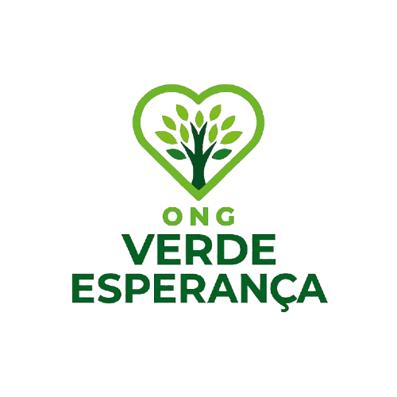

Bem-vindo à ONG Verde Esperança
A ONG Verde Esperança atua na preservação ambiental, promovendo educação ecológica e ações sustentáveis para proteger o meio ambiente.
Ações em Destaque
- Reflorestamento de áreas degradadas: Realizamos o plantio de mudas nativas em regiões afetadas pelo desmatamento, promovendo a recuperação da biodiversidade e a proteção dos recursos hídricos.
- Campanhas de reciclagem nas escolas: Desenvolvemos atividades educativas e oficinas para incentivar alunos e professores a adotarem práticas de reciclagem e redução de resíduos.
- Palestras sobre consumo consciente: Organizamos eventos e palestras para conscientizar a comunidade sobre a importância de escolhas sustentáveis no dia a dia, reduzindo o impacto ambiental.
Nossos Projetos
Conheça os projetos sociais e ambientais que desenvolvemos.
Ver ProjetosMissão
Conscientizar e engajar a sociedade na defesa da natureza, realizando projetos de reflorestamento, reciclagem e conservação de recursos naturais.
Visão
Ser referência nacional em educação ambiental e sustentabilidade, promovendo mudanças positivas para o planeta e inspirando novas gerações.

Valores
Transparência, respeito à natureza, colaboração, responsabilidade social e compromisso com a ética ambiental.
Participe!
Seja voluntário, apoie nossas campanhas ou conheça nossos projetos. Juntos podemos preservar o planeta!
Quero ser voluntário